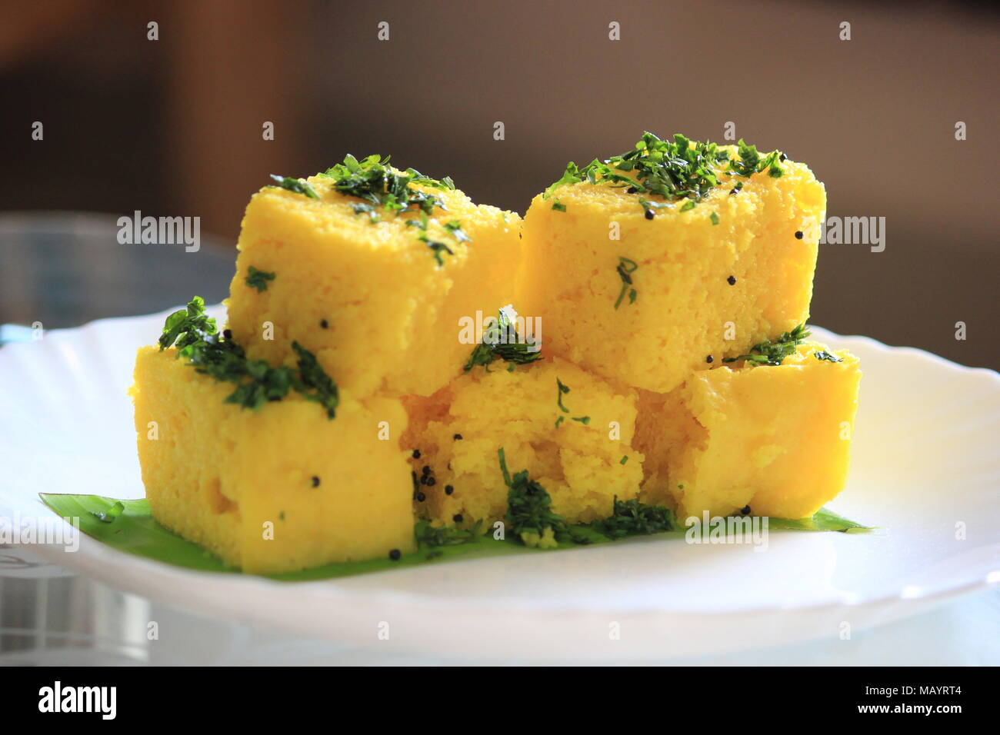

Gujarat Street Food
Home
Mumbai
Delhi
Kolkata
Chennai
Hyderabad
Gujarat
Facts
Famous Street Foods of Gujarat
Dhokla
: A popular Gujarati snack made from fermented rice and lentil batter, often served with chutney.
Thepla
: A thin, flatbread made from wheat flour and spices, often served with vegetables or chutneys.
: A savory cake made from rice, lentils, and spices, often served as a snack or light meal.
